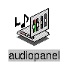
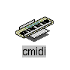
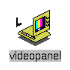

Digital Media består av følgende biblioteker :
I tillegg til disse bibliotekene, er også ImageVision Library, Open Inventor, Open GL, IRIS GL, IRIS Performer og ViewKit beskrevet andre steder.

Audio LibraryProgrammering med Audio Library, gir deg et grensesnitt for konfigurering av audio system. Manualene som beskriver Audio Library, forklarer hvordan du kan styre audio I/O mellom applikasjonene/programmene og audio maskinvare, spesifiserer attributter for digital audio data, og gir deg mulighet til sanntid programmering.
 Audio File Library
Audio File LibraryProgrammering med Audio File Library, gir deg mulighet til a strukturere filsystemet til lydfilene. Manualene som beskriver Audio File Library, forklarer hvordan du kan bruke det til a strukturere Audio File biblioteket, og forklarer hvordan du kan bruke det til a lese og skrive lydfiler.
 CD Audio Library
CD Audio LibraryProgrammering med CD Audio Library, gir deg mulighet til a knytte til CD-ROM (Compact Disc) utstyr. Manualene som beskriver CD Audio Library, forklarer hvordan du kan bruke det til a kontrollerer CD-ROM spilleren for avspilling og sampling av lyd fra en CD-ROM.
 DAT Audio Library
DAT Audio LibraryProgrammering med DAT Audio Library, gir deg mulighet til a knytte til DAT (Digital Audio Tape) utstyr. Manualene som beskriver DAT Audio Library, forklarer hvordan du kan bruke det til a kontrollerer DAT spilleren for avspilling, sampling og innspilling av lyd fra en DAT.

MIDI LibraryProgrammering med MIDI Library, gir deg mulighet til a knytte til MIDI (Musical Instrument Digital Interface) utstyr. Manualene som beskriver MIDI Library, forklarer hvordan du kan bruke det til a imlementere og multiplekse MIDI I/O, og synkronisere MIDI og audio.

Video LibraryVideo Library er en kolleksjon av device-avhengige kall (C basert) for Silicon Graphics arbeidsstasjoner med video-opsjoner, Sirius Video, Indigo2 Video, Indy Video, Galileo Video, eller arbeidsstasjoner som har innebygget video (VINO: video in, no out), slik som Indy. Video Library inkluderer generiske video verkøy, blant annet enkle verktøy for import og eksport av digitale data til og fra eksisterende og fremtidige Silicon Graphics produkter, i tillegg til tredje-parts video utstyr.
Video Library kall gjør det mulig å utføre videokonferanser med plattformer som støtter dette, å "blende" datagrafikk med frames fra videotape eller annen videokilder, og å presentere video i et vindu på arbeidsstasjonen og digitalisere data.
Video Library støtter konverteringer fra et video format til et annet (for eksempel, YUV til RGB eller RGB til YUV) og støtter frame grabs (video til memory, memory til video, og kontinuerlig frame capture).
Video Library kan knyttes med andre Silicon Graphics biblioteker, som
Open GL, IRIS GL og ImageVision Library.
 Compression Library
Compression LibraryProgrammering med Compression Library, gir deg et fleksibel algoritme-uavhengig, omfangsrikt grensesnitt for komprimering og dekomprimering av animasjoner, video, audio, og bilder. Compression Library grensesnittet stotter Cosmo Compress JPEG codec i tillegg til flere programvare codecs. Ved a benytte Cosmo Compress for sanntid JPEG komprimering/dekomprimering, opererer Cosmo Compress som en komponent i video I/O systemet.
Compression Library kan benyttes sammen med Audio File Library, og med data brukt av MoviePlayer og MovieMaker.
 Movie Library
Movie LibraryMovie Library er en kolleksjon av rutiner som tilbyr en API (C basert) for lage, lese, skrive, editere og spille video/filmer. Supporterte filformater inkluderer blant annet Silicon Graphics Movie File (SGIMF) format og Apple QuickTime movie file format.
Oppdatert, 6. juni 1995